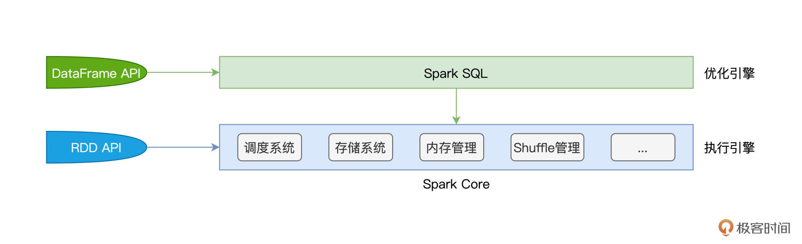
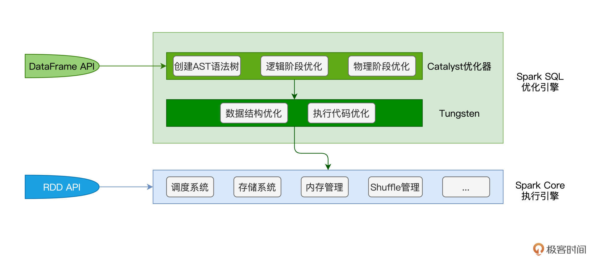
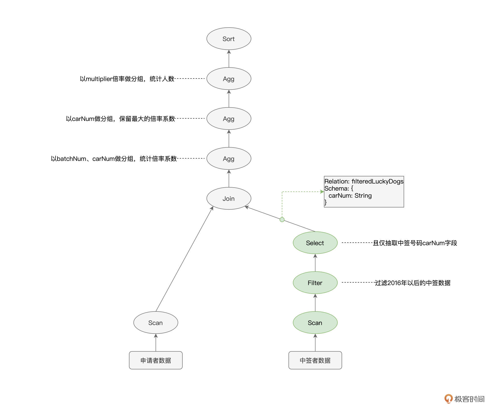
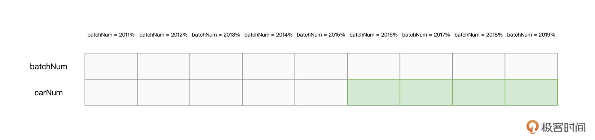
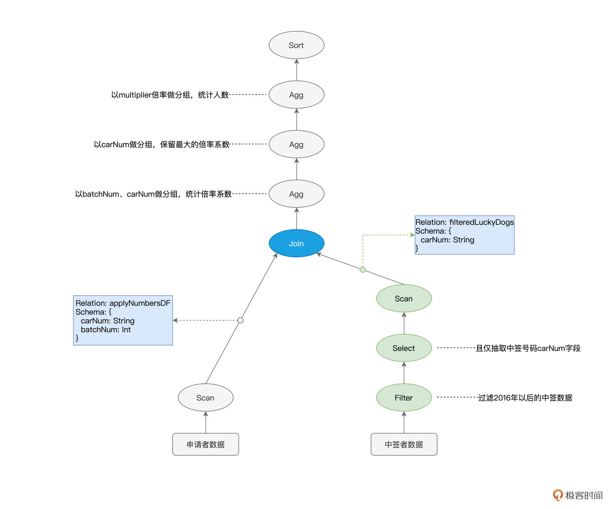
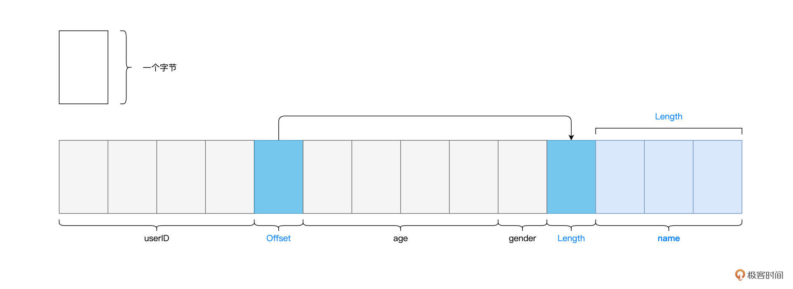

- 00 开篇词 入门Spark，你需要学会“三步走”.md.html
- 01 Spark：从“大数据的Hello World”开始.md.html
- 02 RDD与编程模型：延迟计算是怎么回事？.md.html
- 03 RDD常用算子（一）：RDD内部的数据转换.md.html
- 04 进程模型与分布式部署：分布式计算是怎么回事？.md.html
- 05 调度系统：如何把握分布式计算的精髓？.md.html
- 06 Shuffle管理：为什么Shuffle是性能瓶颈？.md.html
- 07 RDD常用算子（二）：Spark如何实现数据聚合？.md.html
- 08 内存管理：Spark如何使用内存？.md.html
- 09 RDD常用算子（三）：数据的准备、重分布与持久化.md.html
- 10 广播变量 & 累加器：共享变量是用来做什么的？.md.html
- 11 存储系统：数据到底都存哪儿了？.md.html
- 12 基础配置详解：哪些参数会影响应用程序稳定性？.md.html
- 13 Spark SQL：让我们从“小汽车摇号分析”开始.md.html
- 14 台前幕后：DataFrame与Spark SQL的由来.md.html
- 15 数据源与数据格式：DataFrame从何而来？.md.html
- 16 数据转换：如何在DataFrame之上做数据处理？.md.html
- 17 数据关联：不同的关联形式与实现机制该怎么选？.md.html
- 18 数据关联优化：都有哪些Join策略，开发者该如何取舍？.md.html
- 19 配置项详解：哪些参数会影响应用程序执行性能？.md.html
- 20 Hive + Spark强强联合：分布式数仓的不二之选.md.html
- 21 Spark UI（上）：如何高效地定位性能问题？.md.html
- 22 Spark UI（下）：如何高效地定位性能问题？.md.html
- 23 Spark MLlib：从“房价预测”开始.md.html
- 24 特征工程（上）：有哪些常用的特征处理函数？.md.html
- 25 特征工程（下）：有哪些常用的特征处理函数？.md.html
- 26 模型训练（上）：决策树系列算法详解.md.html
- 27 模型训练（中）：回归、分类和聚类算法详解.md.html
- 28 模型训练（下）：协同过滤与频繁项集算法详解.md.html
- 29 Spark MLlib Pipeline：高效开发机器学习应用.md.html
- 30 Structured Streaming：从“流动的Word Count”开始.md.html
- 31 新一代流处理框架：Batch mode和Continuous mode哪家强？.md.html
- 32 Window操作&Watermark：流处理引擎提供了哪些优秀机制？.md.html
- 33 流计算中的数据关联：流与流、流与批.md.html
- 34 Spark + Kafka：流计算中的“万金油”.md.html
- 用户故事 小王：保持空杯心态，不做井底之蛙.md.html
- 结束语 进入时间裂缝，持续学习.md.html
- 捐赠
14 台前幕后：DataFrame与Spark SQL的由来
你好，我是吴磊。
在上一讲，结合“小汽车倍率分析”的例子，我们学习了在Spark SQL子框架下做应用开发的一般模式。我们先是使用SparkSession的read API来创建DataFrame，然后，以DataFrame为入口，通过调用各式各样的算子来完成不同DataFrame之间的转换，从而进行数据分析。
尽管我们说过，你可以把DataFrame看作是一种特殊的RDD，但你可能仍然困惑DataFrame到底跟RDD有什么本质区别。Spark已经有了RDD这个开发入口，为什么还要重复造轮子，整出个DataFrame来呢？
相信学完了上一讲，这些问题一定萦绕在你的脑海里，挥之不去。别着急，今天我们就来高屋建瓴地梳理一下DataFrame的来龙去脉，然后再追本溯源，看看帮助DataFrame崭露头角的幕后大佬Spark SQL又是怎么回事儿。
RDD之殇：优化空间受限
在RDD算子那一讲（[第3讲]），我们曾经留过一道思考题，像map、mapPartitions、filter、flatMap这些算子，它们之间都有哪些共性？
今天，我们从一个全新的视角，来重新审视这个问题。先说结论，它们都是高阶函数（Higher-order Functions）。
所谓高阶函数，它指的是形参为函数的函数，或是返回类型为函数的函数。换句话说，高阶函数，首先本质上也是函数，特殊的地方在于它的形参和返回类型，这两者之中只要有一个是函数类型，那么原函数就属于高阶函数。
上面提到的这些算子，如map、filter，它们都需要一个辅助函数f来作为形参，通过调用map(f)、filter(f)才能完成计算。以map为例，我们需要函数f来明确对哪些字段做映射，以什么规则映射。filter也一样，我们需要函数f来指明以什么条件在哪些字段上过滤。
但是这样一来，Spark只知道开发者要做map、filter，但并不知道开发者打算怎么做map和filter。换句话说，对于Spark来说，辅助函数f是透明的。在RDD的开发框架下，Spark Core只知道开发者要“做什么”，而不知道“怎么做”。这让Spark Core两眼一抹黑，除了把函数f以闭包的形式打发到Executors以外，实在是没有什么额外的优化空间。而这，就是RDD之殇。
DataFrame横空出世
针对RDD优化空间受限的问题，Spark社区在1.3版本发布了DataFrame。那么，相比RDD，DataFrame到底有何不同呢？我们不妨从两个方面来对比它们的不同：一个是数据的表示形式（Data Representation），另一个是开发算子。
DataFrame与RDD一样，都是用来封装分布式数据集的。但在数据表示方面就不一样了，DataFrame是携带数据模式（Data Schema）的结构化数据，而RDD是不携带Schema的分布式数据集。恰恰是因为有了Schema提供明确的类型信息，Spark才能耳聪目明，有针对性地设计出更紧凑的数据结构，从而大幅度提升数据存储与访问效率。
在开发API方面，RDD算子多采用高阶函数，高阶函数的优势在于表达能力强，它允许开发者灵活地设计并实现业务逻辑。而DataFrame的表达能力却很弱，它定义了一套DSL算子（Domain Specific Language），如我们上一节课用到的select、filter、agg、groupBy，等等，它们都属于DSL算子。
DSL语言往往是为了解决某一类特定任务而设计，非图灵完备，因此在表达能力方面非常有限。DataFrame的算子大多数都是标量函数（Scalar Functions），它们的形参往往是结构化二维表的数据列（Columns）。
尽管DataFrame算子在表达能力方面更弱，但是DataFrame每一个算子的计算逻辑都是确定的，比如select用于提取某些字段，groupBy用于对数据做分组，等等。这些计算逻辑对Spark来说，不再是透明的，因此，Spark可以基于启发式的规则或策略，甚至是动态的运行时信息，去优化DataFrame的计算过程。
总结下来，相比RDD，DataFrame通过携带明确类型信息的Schema、以及计算逻辑明确的转换算子，为Spark引擎的内核优化打开了全新的空间。
幕后英雄：Spark SQL
那么问题来了，优化空间打开之后，真正负责优化引擎内核（Spark Core）的那个幕后英雄是谁？相信不用我说，你也能猜到，它就是Spark SQL。
想要吃透Spark SQL，我们先得弄清楚它跟Spark Core的关系。随着学习进程的推进，我们接触的新概念、知识点会越来越多，厘清Spark SQL与Spark Core的关系，有利于你构建系统化的知识体系和全局视角，从而让你在学习的过程中“既见树木、也见森林”。
首先，Spark Core特指Spark底层执行引擎（Execution Engine），它包括了我们在基础知识篇讲过的调度系统、存储系统、内存管理、Shuffle管理等核心功能模块。而Spark SQL则凌驾于Spark Core之上，是一层独立的优化引擎（Optimization Engine）。换句话说，Spark Core负责执行，而Spark SQL负责优化，Spark SQL优化过后的代码，依然要交付Spark Core来做执行。

再者，从开发入口来说，在RDD框架下开发的应用程序，会直接交付Spark Core运行。而使用DataFrame API开发的应用，则会先过一遍Spark SQL，由Spark SQL优化过后再交由Spark Core去做执行。
弄清二者的关系与定位之后，接下来的问题是：“基于DataFrame，Spark SQL是如何进行优化的呢？”要回答这个问题，我们必须要从Spark SQL的两个核心组件说起：Catalyst优化器和Tungsten。
先说Catalyst优化器，它的职责在于创建并优化执行计划，它包含3个功能模块，分别是创建语法树并生成执行计划、逻辑阶段优化和物理阶段优化。Tungsten用于衔接Catalyst执行计划与底层的Spark Core执行引擎，它主要负责优化数据结果与可执行代码。

接下来，我们结合上一讲“倍率分析”的例子，来说一说，那段代码在Spark SQL这一层，是如何被优化的。我把“倍率分析”完整的代码实现贴在了这里，你不妨先简单回顾一下。
import org.apache.spark.sql.DataFrame
val rootPath: String = _
// 申请者数据
val hdfs_path_apply: String = s"${rootPath}/apply"
// spark是spark-shell中默认的SparkSession实例
// 通过read API读取源文件
val applyNumbersDF: DataFrame = spark.read.parquet(hdfs_path_apply)
// 中签者数据
val hdfs_path_lucky: String = s"${rootPath}/lucky"
// 通过read API读取源文件
val luckyDogsDF: DataFrame = spark.read.parquet(hdfs_path_lucky)
// 过滤2016年以后的中签数据，且仅抽取中签号码carNum字段
val filteredLuckyDogs: DataFrame = luckyDogsDF.filter(col("batchNum") >= "201601").select("carNum")
// 摇号数据与中签数据做内关联，Join Key为中签号码carNum
val jointDF: DataFrame = applyNumbersDF.join(filteredLuckyDogs, Seq("carNum"), "inner")
// 以batchNum、carNum做分组，统计倍率系数
val multipliers: DataFrame = jointDF.groupBy(col("batchNum"),col("carNum"))
.agg(count(lit(1)).alias("multiplier"))
// 以carNum做分组，保留最大的倍率系数
val uniqueMultipliers: DataFrame = multipliers.groupBy("carNum")
.agg(max("multiplier").alias("multiplier"))
// 以multiplier倍率做分组，统计人数
val result: DataFrame = uniqueMultipliers.groupBy("multiplier")
.agg(count(lit(1)).alias("cnt"))
.orderBy("multiplier")
result.collect
Catalyst优化器
首先，我们先来说说Catalyst的优化过程。基于代码中DataFrame之间确切的转换逻辑，Catalyst会先使用第三方的SQL解析器ANTLR生成抽象语法树（AST，Abstract Syntax Tree）。AST由节点和边这两个基本元素构成，其中节点就是各式各样的操作算子，如select、filter、agg等，而边则记录了数据表的Schema信息，如字段名、字段类型，等等。
以下图“倍率分析”的语法树为例，它实际上描述了从源数据到最终计算结果之间的转换过程。因此，在Spark SQL的范畴内，AST语法树又叫作“执行计划”（Execution Plan）。

可以看到，由算子构成的语法树、或者说执行计划，给出了明确的执行步骤。即使不经过任何优化，Spark Core也能把这个“原始的”执行计划按部就班地运行起来。
不过，从执行效率的角度出发，这么做并不是最优的选择。为什么这么说呢？我们以图中绿色的节点为例，Scan用于全量扫描并读取中签者数据，Filter则用来过滤出摇号批次大于等于“201601”的数据，Select节点的作用则是抽取数据中的“carNum”字段。
还记得吗？我们的源文件是以Parquet格式进行存储的，而Parquet格式在文件层面支持“谓词下推”（Predicates Pushdown）和“列剪枝”（Columns Pruning）这两项特性。
谓词下推指的是，利用像“batchNum >= 201601”这样的过滤条件，在扫描文件的过程中，只读取那些满足条件的数据文件。又因为Parquet格式属于列存（Columns Store）数据结构，因此Spark只需读取字段名为“carNum”的数据文件，而“剪掉”读取其他数据文件的过程。

以中签数据为例，在谓词下推和列剪枝的帮助下，Spark Core只需要扫描图中绿色的文件部分。显然，这两项优化，都可以有效帮助Spark Core大幅削减数据扫描量、降低磁盘I/O消耗，从而显著提升数据的读取效率。
因此，如果能把3个绿色节点的执行顺序，从“Scan > Filter > Select”调整为“Filter > Select > Scan”，那么，相比原始的执行计划，调整后的执行计划能给Spark Core带来更好的执行性能。
像谓词下推、列剪枝这样的特性，都被称为启发式的规则或策略。而Catalyst优化器的核心职责之一，就是在逻辑优化阶段，基于启发式的规则和策略调整、优化执行计划，为物理优化阶段提升性能奠定基础。经过逻辑阶段的优化之后，原始的执行计划调整为下图所示的样子，请注意绿色节点的顺序变化。

经过逻辑阶段优化的执行计划，依然可以直接交付Spark Core去运行，不过在性能优化方面，Catalyst并未止步于此。
除了逻辑阶段的优化，Catalyst在物理优化阶段还会进一步优化执行计划。与逻辑阶段主要依赖先验的启发式经验不同，物理阶段的优化，主要依赖各式各样的统计信息，如数据表尺寸、是否启用数据缓存、Shuffle中间文件，等等。换句话说，逻辑优化更多的是一种“经验主义”，而物理优化则是“用数据说话”。
以图中蓝色的Join节点为例，执行计划仅交代了applyNumbersDF与filteredLuckyDogs这两张数据表需要做内关联，但是，它并没有交代清楚这两张表具体采用哪种机制来做关联。按照实现机制来分类，数据关联有3种实现方式，分别是嵌套循环连接（NLJ，Nested Loop Join）、排序归并连接（Sort Merge Join）和哈希连接（Hash Join）。
而按照数据分发方式来分类，数据关联又可以分为Shuffle Join和Broadcast Join这两大类。因此，在分布式计算环境中，至少有6种Join策略供Spark SQL来选择。对于这6种Join策略，我们以后再详细展开，这里你只需要了解不同策略在执行效率上有着天壤之别即可。
回到蓝色Join节点的例子，在物理优化阶段，Catalyst优化器需要结合applyNumbersDF与filteredLuckyDogs这两张表的存储大小，来决定是采用运行稳定但性能略差的Shuffle Sort Merge Join，还是采用执行性能更佳的Broadcast Hash Join。
不论Catalyst决定采用哪种Join策略，优化过后的执行计划，都可以丢给Spark Core去做执行。不过，Spark SQL优化引擎并没有就此打住，当Catalyst优化器完成它的“历史使命”之后，Tungsten会接过接力棒，在Catalyst输出的执行计划之上，继续打磨、精益求精，力求把最优的执行代码交付给底层的SparkCore执行引擎。
Tungsten
站在Catalyst这个巨人的肩膀上，Tungsten主要是在数据结构和执行代码这两个方面，做进一步的优化。数据结构优化指的是Unsafe Row的设计与实现，执行代码优化则指的是全阶段代码生成（WSCG，Whole Stage Code Generation）。
我们先来看看为什么要有Unsafe Row。对于DataFrame中的每一条数据记录，Spark SQL默认采用org.apache.spark.sql.Row对象来进行封装和存储。我们知道，使用Java Object来存储数据会引入大量额外的存储开销。
为此，Tungsten设计并实现了一种叫做Unsafe Row的二进制数据结构。Unsafe Row本质上是字节数组，它以极其紧凑的格式来存储DataFrame的每一条数据记录，大幅削减存储开销，从而提升数据的存储与访问效率。
以下表的Data Schema为例，对于包含如下4个字段的每一条数据记录来说，如果采用默认的Row对象进行存储的话，那么每条记录需要消耗至少60个字节。

但如果用Tungsten Unsafe Row数据结构进行存储的话，每条数据记录仅需消耗十几个字节，如下图所示。

说完了Unsafe Row的数据结构优化，接下来，我们再来说说WSCG：全阶段代码生成。所谓全阶段，其实就是我们在调度系统中学过的Stage。以图中的执行计划为例，标记为绿色的3个节点，在任务调度的时候，会被划分到同一个Stage。
而代码生成，指的是Tungsten在运行时把算子之间的“链式调用”捏合为一份代码。以上图3个绿色的节点为例，在默认情况下，Spark Core会对每一条数据记录都依次执行Filter、Select和Scan这3个操作。
经过了Tungsten的WSCG优化之后，Filter、Select和Scan这3个算子，会被“捏合”为一个函数f。这样一来，Spark Core只需要使用函数f来一次性地处理每一条数据，就能消除不同算子之间数据通信的开销，一气呵成地完成计算。
好啦，到此为止，分别完成Catalyst和Tungsten这两个优化环节之后，Spark SQL终于“心满意足”地把优化过的执行计划、以及生成的执行代码，交付给老大哥Spark Core。Spark Core拿到计划和代码，在运行时利用Tungsten Unsafe Row的数据结构，完成分布式任务计算。到此，我们这一讲的内容也就讲完了。
重点回顾
今天这一讲涉及的内容很多，我们一起做个总结。
首先，在RDD开发框架下，Spark Core的优化空间受限。绝大多数RDD高阶算子所封装的封装的计算逻辑（形参函数f）对于Spark Core是透明的，Spark Core除了用闭包的方式把函数f分发到Executors以外，没什么优化余地。
而DataFrame的出现带来了新思路，它携带的Schema提供了丰富的类型信息，而且DataFrame算子大多为处理数据列的标量函数。DataFrame的这两个特点，为引擎内核的优化打开了全新的空间。在DataFrame的开发框架下，负责具体优化过程的正是Spark SQL。
Spark SQL，则是凌驾于Spark Core之上的一层优化引擎，它的主要职责，是在用户代码交付Spark Core之前，对用户代码进行优化。
Spark SQL由两个核心组件构成，分别是Catalyst优化器和Tungsten，其优化过程也分为Catalyst和Tungsten两个环节。
在Catalyst优化环节，Spark SQL首先把用户代码转换为AST语法树，又叫执行计划，然后分别通过逻辑优化和物理优化来调整执行计划。逻辑阶段的优化，主要通过先验的启发式经验，如谓词下推、列剪枝，对执行计划做优化调整。而物理阶段的优化，更多是利用统计信息，选择最佳的执行机制、或添加必要的计算节点。
Tungsten主要从数据结构和执行代码两个方面进一步优化。与默认的Java Object相比，二进制的Unsafe Row以更加紧凑的方式来存储数据记录，大幅提升了数据的存储与访问效率。全阶段代码生成消除了同一Stage内部不同算子之间的数据传递，把多个算子融合为一个统一的函数，并将这个函数一次性地作用（Apply）到数据之上，相比不同算子的“链式调用”，这会显著提升计算效率。
每课一练
学完这一讲之后，我们知道，只有DataFrame才能“享受”到Spark SQL的优化过程，而RDD只能直接交付Spark Core执行。那么，这是不是意味着，RDD开发框架会退出历史舞台，而我们之前学过的与RDD有关的知识点，如RDD概念、RDD属性、RDD算子，都白学了呢？
欢迎你在留言区和我交流讨论，也推荐你把这一讲的内容分享给更多朋友。
© 2019 - 2023 Liangliang Lee. Powered by gin and hexo-theme-book.